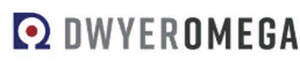

Trade Mark Journal No.2025/026 27 June 2025
UK00004220258 17 June 2025 (9)

- Class 9
- Level indicators; water leak detectors for HVAC systems; pump controllers in the nature of electric control panels for pumps; level switches for monitoring and controlling liquids in tanks and bins; level transmitters; electronic timers, namely, timer boards; panel meters, namely, an electronic instrument that displays an input signal in either a digital or analog form; electronic indicator panels; alarm sensors, namely, process alarm switch modules; signal conditioning devices for industrial process control, namely, signal conditioning modules; relays, electric; current transformers; electric current switches; electrical controlling devices, namely, solid state relay monitors; electrical annunciators, namely, indicating annunciators; electronic motion sensitive switch; electric sensors, namely, particulate transmitters; electric sensors, namely, particulate sensors; timers and tachometers; vibration and detection monitors, namely, vibration sensors; electrical power supplies and transformers; temperature controllers for monitoring and regulating temperature in industrial and laboratory settings, namely, process controllers for monitoring and control of temperature and process; electric converters, namely, signal converters; pressure sensors, namely, static pressures sensors; temperature switches, namely, temperature and humidity switches; temperature transmitters, namely, temperature and humidity transmitters; occupancy sensors, namely, electronic devices which detect the presence of occupants and control the lighting system accordingly; electric sensors, namely, flow sensors; gas sensors for measuring gas concentration, namely, carbon monoxide and carbon dioxide transmitters; sensors for determining velocity, namely, air velocity transmitters; smoke detectors; electronic-based instruments for measuring environmental parameters, namely, indoor air quality transmitters; thermometers not for medical purposes, namely, thermocouple thermometers; temperature transmitters; temperature sensors and indicators; temperature switches; downloadable computer software for programming and communicating with temperature controllers; mass flowmeters flow switches for monitoring and controlling the flow of gases or liquids; electric actuators, namely, damper actuators; pressure gauges; pressure measuring apparatus, namely, pressure monitors and displays; electrical transducers, namely, current to pressure transducers; electrical controlling device, namely, positioners for valves; air regulators, namely, pressure regulators for air; valve position indicators; electric switches, namely, position switches; position transmitters, namely, electronic transmitters for measuring the position of valves; electrical transducers, namely, pressure to current transducers; electric valve actuators; thermo-anemometers; thermo-hygrometers; signal generators; digital multimeters; ground and continuity controls, namely, continuity testers; pressure calibrators in the nature of calibration devices for calibrating pressure gauges; gas leak detectors for HVAC systems; liquid conductivity and PH testers in the nature of scientific measuring instruments, namely, liquid conductivity meters and pH meters; tachometers; sound meters and calibrators, namely, sound level meters; HVAC balancing instruments, namely, anemometers, pitot tubes, and pressure gauges; ultrasonic thickness gauges; vane thermos-anemometers; flow meters, namely, air flow hoods; electronic data loggers; residual gas analyzers; wireless transmitters and receivers; torque sensors in the nature of torque meters; weighing equipment, namely, balances and scales; electrical transducers, namely, load cells, force gauges; strain gauges; strain meters in the nature of strain gauges; data acquisition modules and recorders, namely, analog to digital converters and electronic data loggers; gauss meters, namely, magnetometers; hardness testers, namely, metal hardness testing machines; photo meters, namely, light meters; speed sensors, namely, sensors for determining velocity; thermal imagers in the nature of thermal imaging cameras; electronic-based instruments for measuring environmental parameters, namely, chlorine analyzers for measuring water quality; viscosity meters in the nature of rheometers for measuring the viscosity of fluids; rain and snow gauges; electronic-based instruments for measuring environmental parameters, namely, water quality controllers and sensors; electrical connectors; electrical control panels; electrical terminal blocks; resistance measuring instruments, namely, resistive temperature devices; electrical connectors, namely, thermocouple connectors; fluid metering pumps, namely, controlled volume pumps; bulkhead connectors, namely, electrical connectors; weatherproof enclosures for measuring and control apparatus in the nature of meters, indicators, and controllers; flow regulators for domestic, commercial, agricultural and industrial use; pitot tubes; calibration devices for calibrating gas detectors and analyzers in the nature of gas calibration kits consisting of bottled gas, regulators, and gauges; thermometers not for medical purposes; flow meters; water meters; controlled volume pumps, namely, calibration pumps; manometers being pressure gauges; air flow grids, namely, sensors for measuring air flow in ventilation systems, not for medical use; backflow test kits comprised primarily of manometers being pressure gauges and also including pressure measuring hoses, ball valves, gate valves, and pressure indicating plugs for valves; slide charts in the nature of slide rules; carrying cases for test equipment, namely, carrying cases for pressure gauges.
Dwyer Instruments, LLC
Representative: PAPYRUS IP LTD